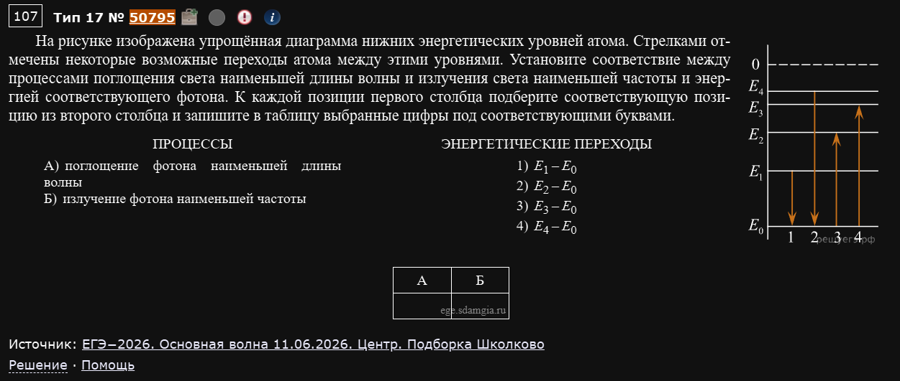
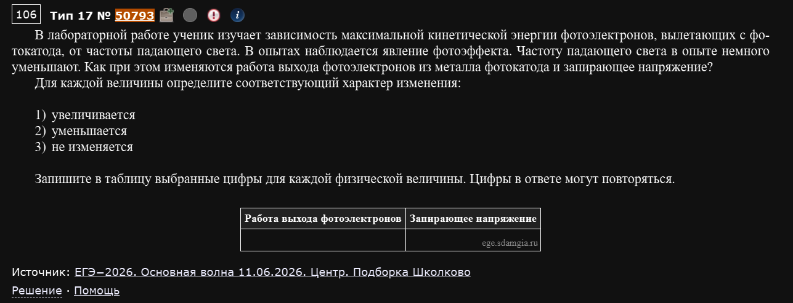
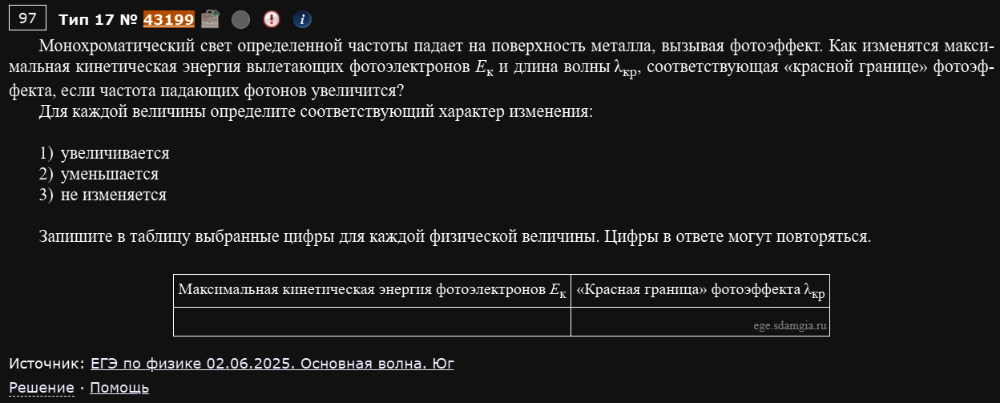
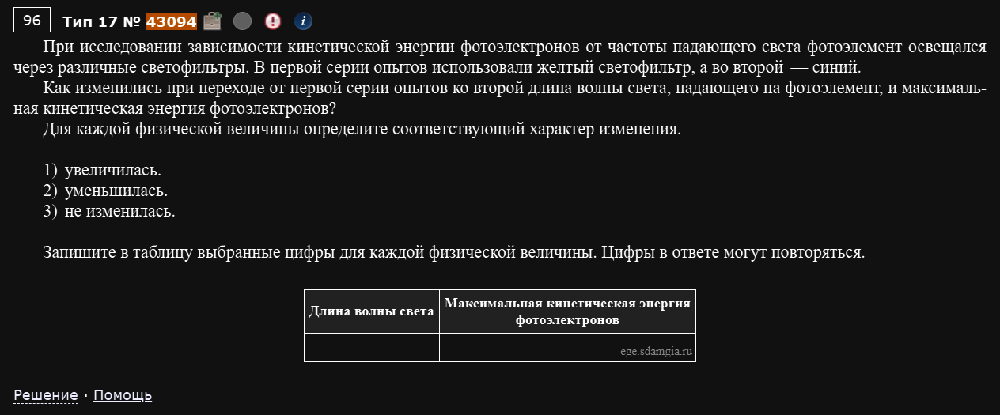
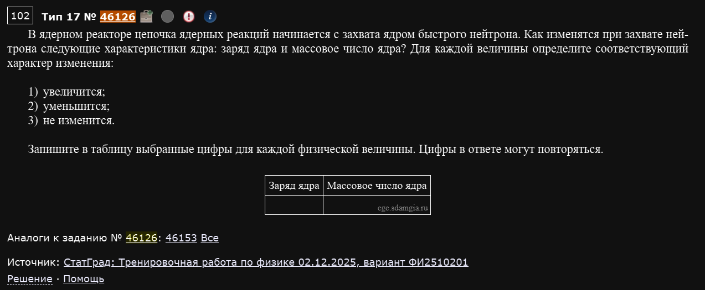
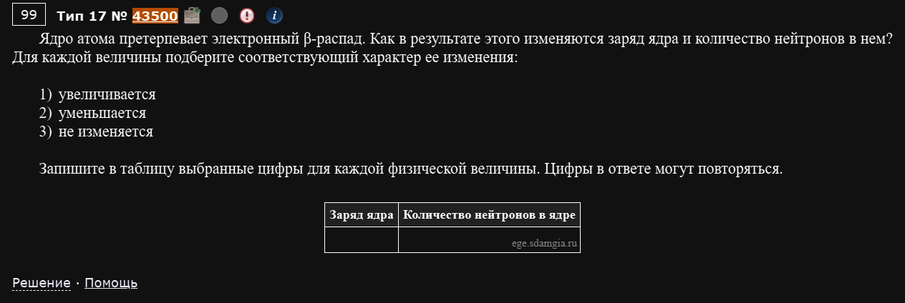

№17. Квантовая физика. Изменение физических величин
Тот же формат “как изменится величина” / “установите соответствие”, что и в номерах 6, 10, 15 — только материал теперь квантовая и немного ядерная физика: энергетические уровни атома, фотоэффект, радиоактивный распад.
Энергетические уровни атома
Три факта, из которых всё следует
- Уровни энергии атома всегда упорядочены снизу вверх: (E₀ — основное состояние, самое глубокое/отрицательное). 2) Расстояния между соседними уровнями сокращаются по мере роста номера уровня (переход — самый большой “прыжок”, — самый маленький). 3) Энергия фотона при переходе между уровнями и равна , а дальше — стандартные связи: (больше энергия — больше частота и меньше длина волны, и наоборот).
Пример 1) (Решу ЕГЭ №50795 — ЕГЭ-2026, основная волна 11.06.2026, Центр, подборка Школково)

На рисунке изображена упрощённая диаграмма нижних энергетических уровней атома. Стрелками отмечены некоторые возможные переходы атома между этими уровнями. Установите соответствие между процессами поглощения света наименьшей длины волны и излучения света наименьшей частоты и энергией соответствующего фотона. А) поглощение фотона наименьшей длины волны Б) излучение фотона наименьшей частоты
Энергетические переходы: 1) ; 2) ; 3) ; 4)
На рисунке отмечены переходы между основным уровнем и каждым из уровней – — то есть все четыре варианта ответа это переходы именно с (или на) , разница только в том, какой именно уровень на другом конце.
А) Поглощение наименьшей длины волны — раз длина волны минимальна, энергия фотона (по ) максимальна. Максимальная энергия — это переход на самый высокий из показанных уровней, то есть (вариант 4).
Б) Излучение наименьшей частоты — минимальная частота означает минимальную энергию фотона (по ). Минимальная энергия — переход между самыми близкими соседними уровнями, показанными в задаче, то есть (вариант 1).
Ответ: А — 4, Б — 1.
Не считайте конкретные числа — сравнивайте "дальность" перехода
В подавляющем большинстве таких задач сами значения и т.д. не даны в числах — сравнение идёт чисто по расположению уровней на диаграмме. Правило простое: чем “дальше” перескакивает атом (чем больше номер уровня отличается от того, с которого начали), тем больше энергия фотона, тем больше частота и тем меньше длина волны — и наоборот.
Фотоэффект
Формула Эйнштейна — центр всей подтемы
Работа выхода — это свойство материала катода, она никогда не меняется от смены частоты падающего света. С ней напрямую связана “красная граница” фотоэффекта — тоже свойство только материала. А вот и связанное с ним запирающее напряжение () зависят от частоты падающего света: чем больше (чем короче ), тем больше и тем больше .
Пример 1) (Решу ЕГЭ №50793 — ЕГЭ-2026, основная волна 11.06.2026, Центр, подборка Школково)

В лабораторной работе ученик изучает зависимость максимальной кинетической энергии фотоэлектронов, вылетающих с фотокатода, от частоты падающего света. В опытах наблюдается явление фотоэффекта. Частоту падающего света в опыте немного уменьшают. Как при этом изменяются работа выхода фотоэлектронов из металла фотокатода и запирающее напряжение?
Работа выхода — свойство металла катода, от частоты падающего света вообще не зависит. Не изменится.
Запирающее напряжение — раз частота уменьшилась, а осталась той же, уменьшится.
Ответ: 32 (работа выхода не изменится, запирающее напряжение уменьшится).
Пример 2) (Решу ЕГЭ №43199 — ЕГЭ по физике 02.06.2025, основная волна, Юг)

Монохроматический свет определённой частоты падает на поверхность металла, вызывая фотоэффект. Как изменятся максимальная кинетическая энергия вылетающих фотоэлектронов Eк и длина волны λкр, соответствующая «красной границе» фотоэффекта, если частота падающих фотонов увеличится?
Кинетическая энергия — частота растёт, работа выхода постоянна увеличится.
“Красная граница” — целиком определяется работой выхода (свойством металла), а частота падающего света в эту формулу вообще не входит. Не изменится.
Ответ: 13 (кинетическая энергия увеличится, красная граница не изменится).
"Красная граница" — это не то же самое, что реальная длина волны падающего света
Частая путаница: — это минимальная частота (максимальная длина волны), при которой фотоэффект ещё возможен для данного металла; она никак не зависит от того, каким конкретно светом вы сейчас светите. А вот сам фотоэффект произойдёт или нет — зависит от того, короче ли реальная длина волны падающего света, чем .
Пример 3) (Решу ЕГЭ №43094)

При исследовании зависимости кинетической энергии фотоэлектронов от частоты падающего света фотоэлемент освещался через различные светофильтры. В первой серии опытов использовали жёлтый светофильтр, а во второй — синий. Как изменились при переходе от первой серии опытов ко второй длина волны света, падающего на фотоэлемент, и максимальная кинетическая энергия фотоэлектронов?
Здесь величина, которая меняется — не абстрактная “частота”, а конкретный цвет фильтра. Синий свет коротковолновее и высокочастотнее жёлтого (по порядку цветов видимого спектра: красный-оранжевый-жёлтый-зелёный-синий-фиолетовый — длина волны убывает слева направо).
Длина волны — переход жёлтый→синий означает переход к более короткой волне. Уменьшилась.
Кинетическая энергия — раз длина волны уменьшилась, частота выросла, а по формуле Эйнштейна бóльшая частота даёт бóльшую (работа выхода та же, металл фотоэлемента не менялся). Увеличилась.
Ответ: 21 (длина волны уменьшилась, кинетическая энергия увеличилась).
Держите в голове порядок цветов спектра
Такие задачи часто заменяют слово “частота” на конкретные цвета светофильтров (жёлтый, синий, фиолетовый, зелёный…) — нужно самостоятельно вспомнить, у какого цвета выше частота (короче волна). Порядок от длинных волн к коротким: красный → оранжевый → жёлтый → зелёный → синий → фиолетовый.
Ядерная физика (в связке с квантовой)
Пример 1) (Решу ЕГЭ №46126 — СтатГрад: тренировочная работа по физике 02.12.2025, вариант ФИ2510201)

В ядерном реакторе цепочка ядерных реакций начинается с захвата ядром быстрого нейтрона. Как изменятся при захвате нейтрона следующие характеристики ядра: заряд ядра и массовое число ядра?
Нейтрон электрически нейтрален и, присоединяясь к ядру, не добавляет ни одного протона — только один лишний нуклон.
Заряд ядра (число протонов) — нейтрон протонов не содержит. Не изменится.
Массовое число — прибавился один нуклон (нейтрон). Увеличится.
Ответ: 31 (заряд не изменится, массовое число увеличится).
Пример 2) (Решу ЕГЭ №43500)

Ядро атома претерпевает электронный β-распад. Как в результате этого изменяются заряд ядра и количество нейтронов в нём?
При электронном β-распаде один из нейтронов превращается в протон (испуская электрон и антинейтрино) — общее число нуклонов (массовое число) не меняется, но состав “протоны/нейтроны” внутри него сдвигается.
Заряд ядра — один нейтрон стал протоном, протонов стало на один больше. Увеличивается.
Количество нейтронов — соответственно, на один меньше, чем было (массовое число то же, а протонов прибавилось). Уменьшается.
Ответ: 12 (заряд увеличивается, число нейтронов уменьшается).
Пара к номеру 16
Эти два примера — по сути та же логика законов сохранения заряда и массового числа, что и в разборе номера 16, только упакованная в формат “увеличится/уменьшится/не изменится” вместо прямого расчёта Z и A. Если формулы реакций из номера 16 понятны, здесь достаточно просто аккуратно отследить, что меняется, а что нет, при каждом конкретном процессе (захват нейтрона / β-распад / α-распад).